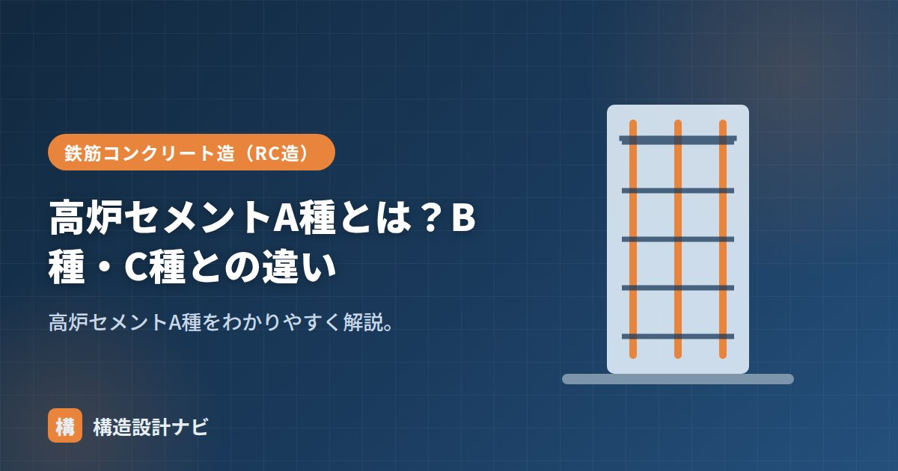

高炉セメントA種とは？B種・C種との違い

高炉セメントA種とは、高炉セメントのうち、混合材である高炉スラグ微粉末の割合がもっとも少なく規定された区分のことです。高炉セメントはスラグの混合率によってA種・B種・C種の3区分に分かれ、A種はその中でもっともポルトランドセメント寄りの性質を持ちます。名前の並びから「A種がもっとも優れたグレード」と誤解されがちですが、実際はアルファベット順＝スラグ量の少ない順を示す記号にすぎません。
- A種は高炉スラグの混合率が5%超〜30%以下ともっとも少ない区分
- 性質はポルトランドセメントに近く、混合セメントとしての利点は小さい
- 流通量が少なく、実務では原則としてB種が選ばれる
A種の特徴
高炉スラグの割合は5%超〜30%以下。混合材が少ないため、普通ポルトランドに近い性質で、初期強度・水和熱・中性化速度もポルトランドセメントに近くなります。スラグを混ぜることで得られる長期強度の伸びや低発熱性、化学抵抗性の向上といった効果は、混合率が低い分だけ小さくとどまります。
記号とJIS規格
高炉セメントはJIS R 5211（高炉セメント）に規格が定められ、区分ごとに記号があります。A種はBA、B種はBB、C種はBCと表記され、いずれも数字ではなくスラグ混合率の範囲で区分されている点がポルトランドセメントの種類（普通・早強など）とは異なります。
B種・C種との違い
| 区分 | 記号 | スラグ割合 | 性質 |
|---|---|---|---|
| A種 | BA | 5%超〜30%以下 | ポルトランドに近い |
| B種 | BB | 30%超〜60%以下 | バランス型（一般的） |
| C種 | BC | 60%超〜70%以下 | 低発熱・耐久性が最大 |
表のとおり、スラグの割合が増えるほど水和熱は下がり、長期の耐久性は高まる傾向にあります。反対に、初期強度の立ち上がりは遅くなり、湿潤養生の重要度も増していきます。A種はこの傾向の起点にあたる区分で、混合セメントとしての特徴がもっとも弱く出ます。
デメリットと使い分け
A種はスラグが少ないため、低発熱・耐久性・ASR抑制といった混合セメントの利点が小さくなります。一方でポルトランドに対する明確な優位も出にくく、結果として中途半端になりやすいのが弱点です。流通量も少なく、実務ではB種が選ばれることがほとんどです。明確に混合セメントの効果を期待する場合はB種以上を選びます。
生コン工場の設備・在庫の都合上、A種を常時扱っている工場はごく限られます。特記仕様書などで指定がない限り、設計段階からA種を積極的に選ぶ理由は少なく、コスト面でも普通ポルトランドセメントと大きく変わらないことが多いため、採用例は多くありません。
「A種・B種・C種」という表記から、学校の成績のようにA種が最上位と誤解されることがありますが、これは誤りです。区分はあくまで高炉スラグの混合率の少ない順に付けられた記号であり、性能の優劣を表すものではありません。目的に応じて必要な性質（低発熱・耐久性など）が強く出る区分を選ぶという考え方が基本です。
Q1. A種はどのような現場で使われますか？
ポルトランドセメントに近い性質を持ちながら高炉セメントとして扱いたい、といった限定的な条件でまれに使われますが、一般の建築工事ではほとんど見かけません。特記がなければ設計者・施工者ともに検討の対象から外れることが多い区分です。
Q2. A種とポルトランドセメントは同じものと考えてよいですか？
厳密には別物です。A種はJIS R 5211に基づく高炉セメントであり、スラグをわずかに含む点でポルトランドセメント（JIS R 5210）とは規格上区別されます。ただし性質面での差は小さく、実務上の使い分けが難しいことがデメリットとして挙げられます。
特記仕様書にA種の指定があると、私はまず生コン工場に在庫があるか真っ先に確認します。A種は流通量が少なく、発注段階でB種への変更協議になることが多いため、設計段階で工場の対応可否を押さえておくのが実務上の勘所です。
A・B・C種の位置づけ（図解）
A種の使いどころ
A種は混合セメントの中でもっとも普通ポルトランドに近い性質を持ちます。この特徴が活きる場面を整理します。
| 場面 | A種が適する理由 |
|---|---|
| 工期に余裕がなく、初期強度が必要 | スラグが少ないため強度発現の遅れが小さい |
| 中性化を特に抑えたい | 水酸化カルシウムの減少が少なく、中性化の進行が普通ポルトランドに近い |
| 寒い時期の施工 | 低温による強度発現の遅れが、B種・C種ほど大きくならない |
| ASR抑制もある程度期待したい | 効果は限定的だが、普通ポルトランドよりは抑制が期待できる |
ただし実務では、A種は流通量が少なく、生コン工場が常時在庫していないことがほとんどです。「混合セメントを使いたいが初期強度も欲しい」という場合は、A種を探すよりもB種を使って養生期間を確保するか、普通ポルトランドセメントを選ぶほうが現実的なことが多くなります。
A・B・Cという記号から「A種が最上位グレード」と誤解されがちですが、これはスラグ混合率の少ない順に振られた記号にすぎません。実務でもっとも多く使われるのはB種で、性能と扱いやすさのバランスに優れているからです。用途に応じて選ぶものであり、区分に優劣はありません。
よくある質問
Q1. 高炉セメントA種はどこで入手できますか？
流通量が限られており、生コン工場が常時在庫していないことがほとんどです。使用するには事前の手配が必要で、地域によっては供給自体が難しい場合もあります。設計図書でA種を指定する場合は、あらかじめ供給可能かを確認しておく必要があります。実務ではB種か普通ポルトランドセメントで代替を検討することが多くなります。
Q2. A種とB種で強度に差はありますか？
同じ配合であれば、初期強度はA種のほうが出やすく、長期強度はB種のほうが伸びる傾向があります。ただしJISで規定される強度の下限値は、A種・B種ともに材齢28日で同等の水準が求められています。実際の強度は配合と養生条件で決まるため、区分の違いだけで強度が決まるわけではありません。
Q3. 混合セメントを使うと構造計算に影響しますか？
設計基準強度が同じであれば、構造計算そのものに違いはありません。ヤング係数や許容応力度は設計基準強度から算定されるため、セメントの種類による直接の影響はないためです。ただし、強度発現が遅いことから構造体強度補正値の考え方が変わる場合があり、施工計画・工程には影響します。
まとめ
- 高炉セメントA種はスラグ5%超〜30%以下（記号BA）で、ポルトランドに近い性質。
- 混合セメントの利点が小さく中途半端になりやすい。
- 実務ではB種が主流。効果を求めるならB種以上を選ぶ。
- 「A種＝最上位」ではなく、区分はスラグ混合率の少ない順を示す記号。